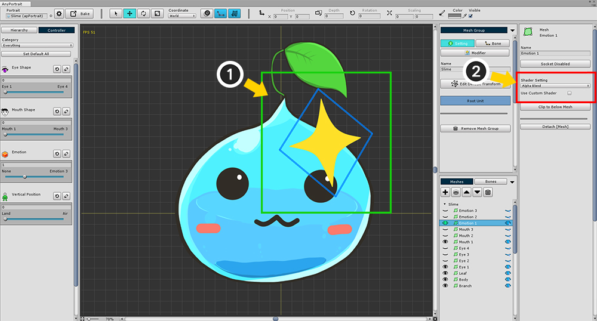
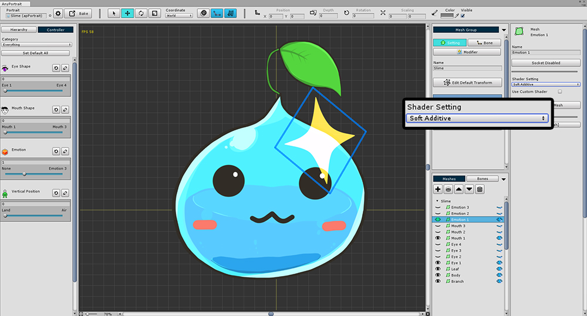
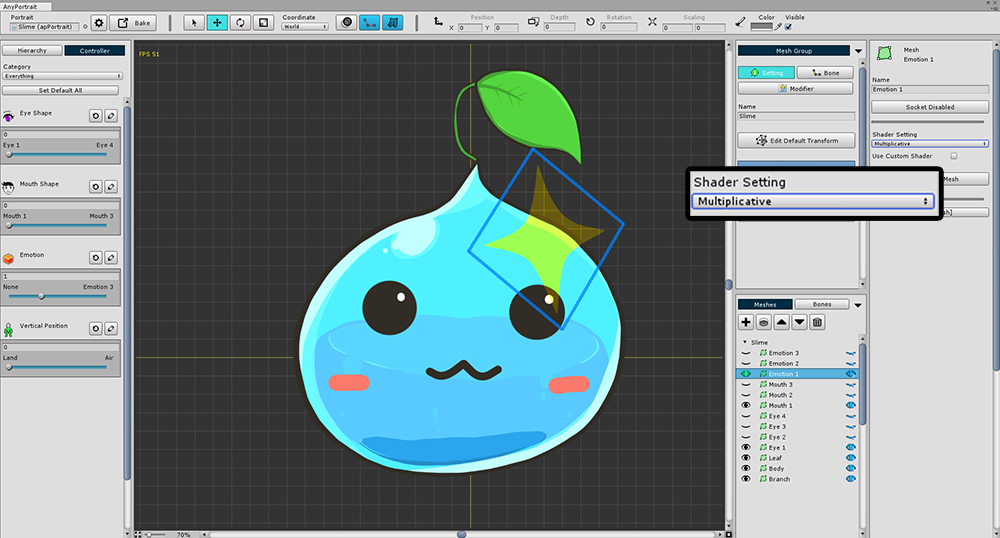
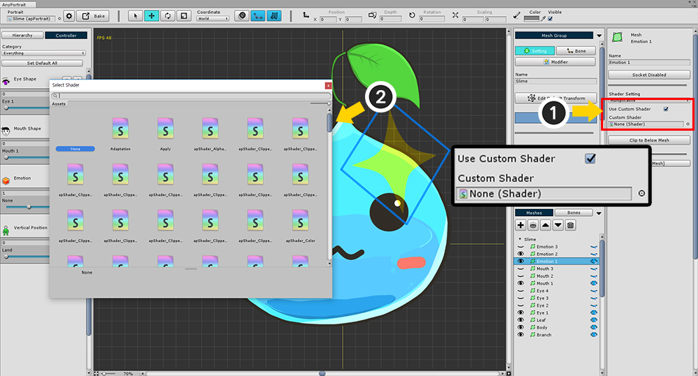

AnyPortrait > マニュアル > メッシュ用シェーダ(Shader)
メッシュ用シェーダ(Shader)
1.1.7

AnyPortraitでは、デフォルトの「Alpha Blend」メソッド以外のシェーダ設定を選択できます。
(1) メッシュグループを選択し、「Setting」タブを選択して、変更したいメッシュを選択します。
(2) 「Shader Setting」で設定を変更することができます。
Additive, Soft Additive, Multiplicative



「Alpha Blend」に加えて、最も一般的に使用される「Additive」、「Soft Additive」、および「Multiplicative」ブレンドオプションが用意されています。
この変更された設定は、「Bake」後のシーンに適用されます。
Custom Shader

エディタが提供するシェーダ以外のシェーダを使用できます。
(1) 「Use Custom Shader」をチェックし、(2) シェーダーを選択します。
(「関連ページ」にシェーダを書き込む方法を見つけることができます。)
カスタムシェーダーはエディターには適用されません。
確認するシーンに「Bake」を入れます。

シーンにBakeすると、設定したシェーダが適用されていることがわかります。
クリッピングメッシュのマスクテクスチャのサイズ

メッシュをクリッピングする場合、クリッピングのマスクになるメッシュには、「Mask Texture Size」設定があります。
ゲームシーンでクリッピングレンダリングを実行する場合は、この時点でのサイズを意味する「Render to Texture」メソッドで処理されます。
マスクテクスチャサイズが大きいほどクリップのレンダリング品質は高くなりますが、サイズが小さくなるほど描画負荷が低くなります。
マスクテクスチャサイズの値は画面上のピクセル単位のサイズなので、実行環境の表示サイズを考慮して設定することができます。
v1.1.7でのメッシュのプロパティのUI
AnyPortrait v1.1.7でメッシュのレンダリングに関する多くの変化があります。
メッシュのマテリアル属性に関するUIが多少変更されました。
以下は変更されたUIについて説明します。

変更されたメッシュのプロパティのUIのレンダリングに関連する部分です。
(1) 「ブレンド方式」を決定します。 Alpha Blend、Additive、Soft Additive、Multiplicativeの4つの方法をサポートします。
(2) 「マテリアルセット（Material Set）」と「カスタムシェーダ（Custom Shader）」を選択することができます。
(3) 「マテリアルセット」を選択したときのUIです。
(4) ユーザーがマテリアルのプロパティの初期値を設定することができます。
(5) 両面レンダリングオプションです。

マテリアルセット方式でレンダリングするときのUIです。
- Use Default Material Set ON/OFF : 基本のマテリアルセットを利用するかどうかです。
- Change : 基本マテリアルセットを利用しない場合には、特定のマテリアルのセットを選択するボタンです。
- Open Material Library : マテリアルセットを管理する「マテリアルライブラリ（Material Library）」を開きます。 （関連ページ）

Custom Shaderを利用してレンダリングするときのUIです。
外部のShaderアセットを指定することができます。

マテリアルのプロパティの初期値を指定するUIです。
マテリアルセットの設定よりも優先されます。
- Add Custom Property : カスタムプロパティの設定を追加します。
- プロパティの名前、タイプ、値、削除ボタン : マテリアルに適用されるプロパティです。 Shaderに同じ名前のプロパティがあります。

Unityシーンでメッシュに影がどのようにレンダリングされるのかの設定です。
「Cast Shadows」をオンにすると、他のメッシュに影を発生させ、「Receive Shadows」をオンにすると、そのメッシュに影が垂れています。
基本的にはBakeダイアログでの共通の影の設定に従います。 （関連ページ）
「Overwrite Shadow Setting」をオンにしたときは、そのメッシュだけ別の影の設定が適用されます。

v1.1.7に追加された機能です。
現在選択されてメッシュの属性を他のメッシュに一括してコピーすることができます。
(1) 「Copy Settings to other meshes」ボタンを押すと、コピーのためのダイアログが表示されます。
(2) コピーすることができる他のメッシュが表示され、複数の選択ができます。
(3) コピーしようとする属性です。
- Default Color : モディファイヤを適用する前の基本的な色
- Blending Type : ブレンドオプション
- Custom Shader : カスタムシェーダを使用するかどうかとシェーダアセット
- Render Texture Size : クリッピングマスクがされているメッシュのレンダリングテクスチャのサイズ
- 2-Sided Mesh : 両面レンダリングするかどうか
- Shadow Settings : 影の設定
- Material Set : マテリアルのセットに関する設定
- Custom Material Properties : ユーザーが定義した材質のプロパティの初期値
(4) 全選択または選択解除するボタンがあり、Applyボタンを押すと、選択した属性がコピーされて適用されます。